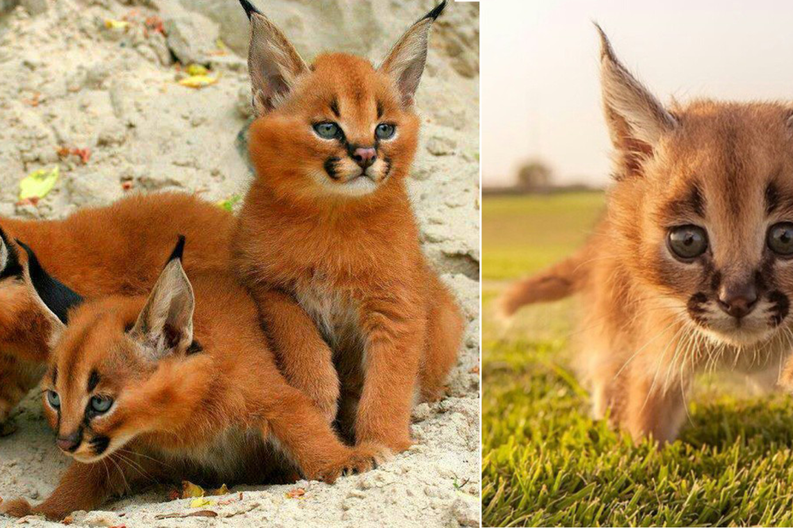

Caracals Might Be The Cutest Wild Cat You've Seen

Lions, tigers, and leopards probably get the most attention when we talk about wild cats, but there are many species that are definitely missing from the conversation. We’ll shed some light onto one of them today and why we think they just might be the cutest wild cat you’ve ever seen.
Ladies and gentlemen, meet the caracal.
Not only do these russet colored beauties have a fascinating history, but they’re also absolutely stunning to behold!
This majestic cat is called a caracal

Officially considered a small cat, they can grow quite large with the largest in ranges of up to almost 50 pounds

Depending on the region they are in, the Caracal coat can vary from a reddish-brown to tawny-grey in color.

Usually they are solitary creatures but at times they can be found in mated pairs. Their short tails and tufted ears somewhat resemble that of a desert lynx or bobcat.

Caracals dig burrows to raise their young until they are mature enough to head into the wild themselves. They are also highly adapted and capable of climbing trees. With its strong and lengthy hind legs, the caracal is able to leap up to three meters in the air to catch flying birds.

Sometimes kept as pets, Caracals have a fairly good rapport with umans.

Their name is derived from the Turkish word, “Karakulak” which means black ears. You can probably tell why.

Caracals can survive with very, very little water. In fact, they get most of their water from their prey.

They mostly eat rabbits and rodents, but like most cats, they have a real taste for birds. The caracal’s impressive leaping ability once led to the species being trained to hunt game birds for the Persian and Indian royalty.

Just like your own house cat, they are diurnal, meaning they are most active at dawn and at dusk.

Being the fastest cat of its size, the caracal is able to run down prey such as small antelopes and hares.


Their babies on the other hand are just adorable.

Like super adorable

I mean just look at this little fellow!

Melting hearts <3